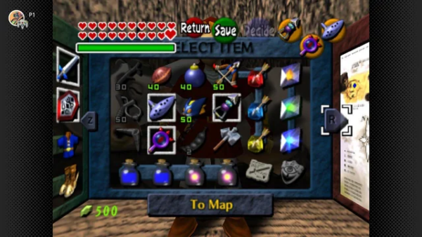

The Legend of Zelda: Ocarina of Time
Overview
The Legend of Zelda: Ocarina of Time is an action-adventure video game developed by Nintendo and released in 1998 for the Nintendo 64. You play as Link, a young boy tasked with saving the land of Hyrule from the evil king Ganondorf. The game mixes exploration, puzzle-solving, and combat, and is widely regarded as one of the greatest video games of all time.
Navi, the fairy companion of Link, is a key character in the game. She offers hints and advice on how to progress, and her catchphrase "Hey! Listen!" has become a memorable part of the game's legacy.
Link, initially a young boy, embarks on a quest to save Hyrule from Ganondorf. His entire life, he believed he was a Kokiri, though it is later revealed that he is Hylian.
The game is set in a 3D world, allowing players to explore forests, mountains, and dungeons. Players interact with non-playable characters (NPCs), solve puzzles, and defeat enemies to progress. The game also features a time-travel mechanic, where Link moves between his childhood and adulthood to complete different tasks.
Ocarina of Time received critical acclaim for its innovative gameplay, immersive world, and memorable music. Its influence can be seen in many later Zelda titles and other action-adventure games.
Meet the Great Deku Tree
Click the tree. Cut the grass at the bottom of the screen. Press I for your inventory. Find the hidden Gold Skulltula.
Characters & Items
The Wider Series
The Legend of Zelda franchise began in 1986 and has since expanded into a series of games, each with its own story and gameplay. Ocarina of Time was its first 3D entry, and it set the template for many games that followed. Other games you can explore:
- The Legend of Zelda: Majora's Mask (2000)
- The Legend of Zelda: Twilight Princess (2006)
- The Legend of Zelda: Skyward Sword (2011), set earlier in the timeline
Map of Hyrule
An old traveller's chart. Click a region.
Franchise Timeline
Scroll sideways and click a game.
Pause Screen

This page is an overview of the main characters and games in the series, starting with Ocarina of Time. It is a tribute to a timeless classic that has stood the test of time and continues to captivate players of all ages.